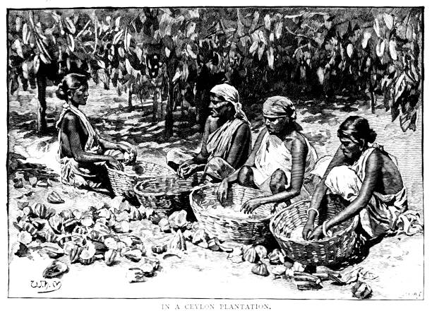

Sri Lankan Foods

About Sri Lankan Foods
Sri Lankan cuisine is a rich and diverse culinary tradition influenced by its history, geography, and multicultural population. Here are some details about Sri Lankan foods:
- Rice and Curry:Rice and curry are staple foods in Sri Lanka. A typical meal consists of rice served with an array of curries, including meat, fish, or vegetable curries. These curries are usually flavored with a blend of spices such as cinnamon, cardamom, cloves, and curry leaves.
- Coconut: Coconut is a fundamental ingredient in Sri Lankan cooking. It is used in various forms, including coconut milk, coconut oil, and grated coconut. Coconut milk is commonly used to add richness and creaminess to curries and desserts.
- Spices:Sri Lankan cuisine is known for its bold and flavorful use of spices. Some common spices used in Sri Lankan cooking include cumin, coriander, turmeric, fenugreek, and mustard seeds. The use of spices varies by region and personal preference.
- Curries:Sri Lankan curries come in a variety of flavors and styles. Meat curries such as chicken curry, beef curry, and fish curry are popular choices. Vegetable curries made with ingredients like potatoes, eggplant, and lentils are also widely enjoyed.
- Hoppers and String Hoppers: Hoppers are bowl-shaped pancakes made from fermented rice flour and coconut milk. They are often served for breakfast or as a snack with accompaniments like sambal (chili paste) or seeni sambol (caramelized onion relish). String hoppers are thin strands of steamed rice noodles typically served with curries.
- Kottu Roti:Kottu roti is a popular street food in Sri Lanka made from chopped flatbread (roti), vegetables, eggs, and/or meat, all stir-fried together with spices on a hot griddle. It's a flavorful and filling dish enjoyed by locals and visitors alike.
- Sweets and Desserts:Sri Lankan sweets are often made with ingredients like rice flour, jaggery (palm sugar), and coconut. Popular desserts include kiribath (coconut milk rice), kavum (deep-fried sweetmeat), and wattalapam (a rich pudding made with coconut milk, jaggery, eggs, and spices).
- Tea:Sri Lanka is famous for its tea production, particularly Ceylon tea. The country's tea estates produce a variety of black, green, and white teas, enjoyed both domestically and exported worldwide.
- Fruits:Sri Lanka's tropical climate allows for the cultivation of a wide variety of fruits, including mangoes, pineapples, bananas, papayas, and jackfruits. These fruits are often enjoyed fresh or used in desserts and beverages.
- Cultural Influences:Cultural Influences: Sri Lankan cuisine has been influenced by various cultures over the centuries, including Indian, Dutch, Portuguese, and British influences. These influences have contributed to the diversity and richness of Sri Lankan food.
Sri Lankan cuisine offers a delightful combination of flavors, spices, and textures that reflect the country's vibrant culinary heritage.
History of Sri Lankan Foods
The history of Sri Lankan foods is deeply intertwined with the country's cultural, geographical, and historical evolution. Here's an overview of the history of Sri Lankan foods:
- Indigenous Influences:Sri Lanka's indigenous population, the Vedda people, had their own culinary traditions based on hunting, gathering, and early forms of agriculture. Staples like rice, grains, tubers, and wild game formed the basis of their diet.
- Ancient Civilization:Ancient Civilization: The island of Sri Lanka has a rich history dating back thousands of years. Ancient civilizations such as the Sinhalese and Tamil kingdoms contributed to the development of Sri Lankan cuisine. They cultivated rice and various spices and traded with neighboring regions, influencing their culinary practices.
- Influence of Buddhism:Influence of Buddhism: The spread of Buddhism in Sri Lanka from ancient times had a significant impact on food culture. Buddhist dietary principles, such as vegetarianism and moderation, influenced the consumption patterns of the population. Vegetarian dishes and offerings for religious ceremonies became common.
- Colonial Period:Sri Lanka was colonized by various European powers over the centuries, including the Portuguese, Dutch, and British. Each colonial power brought its own culinary influences, ingredients, and cooking techniques to the island. For example, the Portuguese introduced chilies, tomatoes, and potatoes, while the Dutch introduced techniques for preserving food.
- Trade Routes:Sri Lanka's strategic location along ancient trade routes contributed to the exchange of culinary ideas and ingredients with neighboring regions and distant lands. Spices, in particular, played a crucial role in trade, with Sri Lanka being known as the "Spice Island."
- Traditional Cooking Methods:Traditional Sri Lankan cooking methods, such as clay pot cooking, open-fire grilling, and steaming in banana leaves, have been passed down through generations. These methods help preserve the flavors and nutritional value of foods.
- Cultural Diversity:Sri Lanka's cultural diversity, with influences from Sinhalese, Tamil, Muslim, and Burgher communities, has resulted in a rich tapestry of culinary traditions. Each community has its own unique dishes, cooking techniques, and flavor profiles.
- Modernization and Globalization: In recent decades, urbanization, globalization, and technological advancements have led to changes in Sri Lankan food culture. Modern convenience foods, international cuisines, and fast food chains have become more prevalent, alongside traditional dishes.
- Tourism:Sri Lanka's booming tourism industry has further contributed to the promotion and globalization of Sri Lankan cuisine. Visitors from around the world are drawn to the island's vibrant food scene, where they can sample a wide range of traditional and fusion dishes.
The history of Sri Lankan foods is a reflection of the country's rich cultural heritage, historical influences, and culinary innovation over the centuries.